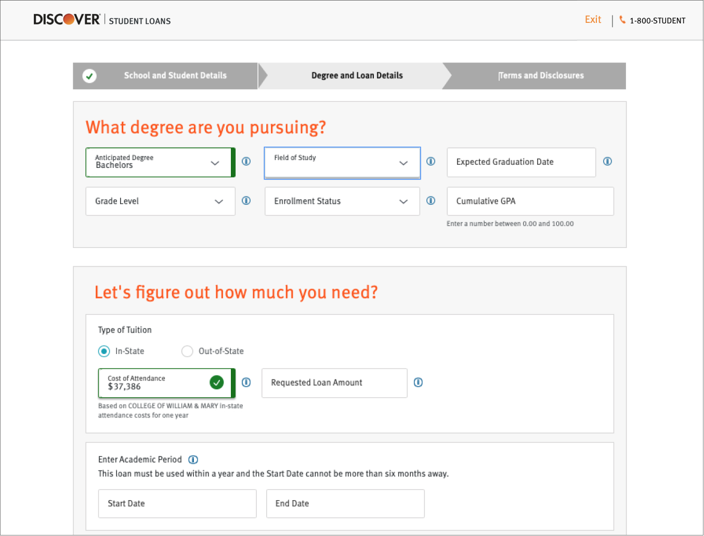
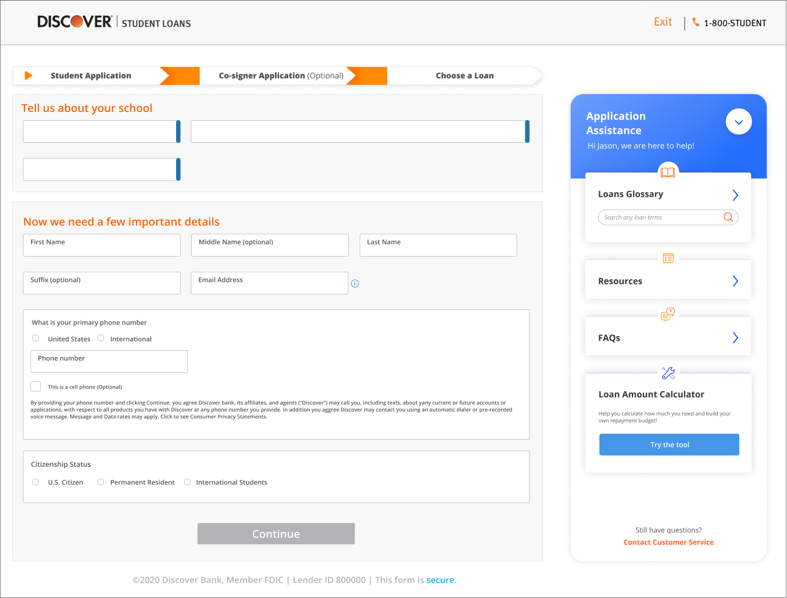

Bridging the Resource Gap:
Discover Student Loans x CMU MHCI Capstone In Progress
My Role Product Designer
Time Jan 2020 - Present
Team Stacy Kellner, Cora Wang, Bidisah Roy, Aaron Bishop
Overview
The experience of applying for a student loan can be overwhelming. The process of getting a student loan is tightly coupled with discovering career aspirations, deciding which institution(s) to attend, planning long-term finances and selecting the appropriate loan products. Our team aims to help Discover understand the decision context through research and create value for our client in terms of increased conversion and acquisition of long-term customers at the beginning of their financial lives.
Client's Initial Problem Statement
Why is there a drop-off at Discover Student Loans' product selection page?
Problem Reframe
How might we help customers commit to one of DSL’s student loan products?
Our Solution
Through our research, we found that customers, no matter students or parents, have a need and desire for more guidance, and we think the solution space lies in closing the resource gap - specifically, providing in-application guidance to customers.
Stakeholder Map: Student Loan Industry
There are multiple plays in the student loan industry: students, parents, lenders, educators, and universities. We created this stakeholer map to define the user groups we want to do primary research with.

Primary Research
We conducted several rounds of exploratory & generative research with key stakeholder groups, including 14 students, 13 parents and 12 educators in total.

👆Stacy and I hugging our affinity map after the first round of synthesizing session :)
Key Insights
After two rounds of research and affinity mapping sessions, we synthesized our findings into a collection of models and insights.
1.
When making financial decisions for their kids, parents want to feel like they’re in the driver’s seat.
“Parents are afraid of admitting what they don’t know to their children because they think it’s their responsibility to know.” - financial advisor
2.
When overwhelmed by complex information, customers rely on stereotypes
“My father felt that private lenders were loan sharks.” - grad student
3.
Parental engagement inversely correlates with student engagement
"My dad made all the decisions about financing college. He believed federal loans were inherently better than private loans, so I just believed that too." - undergrad
4.
Parents accept that there can be a “right” amount of debt.
“My idea was that she shouldn’t graduate with more than $20k worth of debt. It just seems like a reasonable amount that can be paid off in 5 years. It's okay to go into debt for the right purpose. ” - dad
Student Personas
We identidied two archetypical student users: Sheltered Scholar and Pragmatic Planner.
Parent Personas
Since most of the DSL customers are undergraduate students, it means the actual users are these students' parents. Thus, we shifted our research focus from students to parents.
Parents take different parenting approaches regarding student loans application. To put them on a spectrum, one end would be Guiding Parent , while another end would be Leading Parent.
Customer Journey: Paying for College
People don't want to get a loan. They want an education. Student loan is the means to the end.

Final Design
Before
After
We created an Application Assistance to provide customers guidance within the application.

Search any obscure loan terms you don't know in the glossary
Look up the FAQs related to this page to resolve your concerns


Read or watch realted articles or videos to fully comprehend the topic
Use the interactive tool to figure out what is the "right" amount of student loans you need!
Show or hide the Application Assistant depends on if you are a power user or a beginner. It's all up to you!
Progree bar to track where you are throughout the application
Prioritizing Assistance sections per application contents
Data Support
The team is working hard analyzing the data from our A/B Testing... Stay tuned!